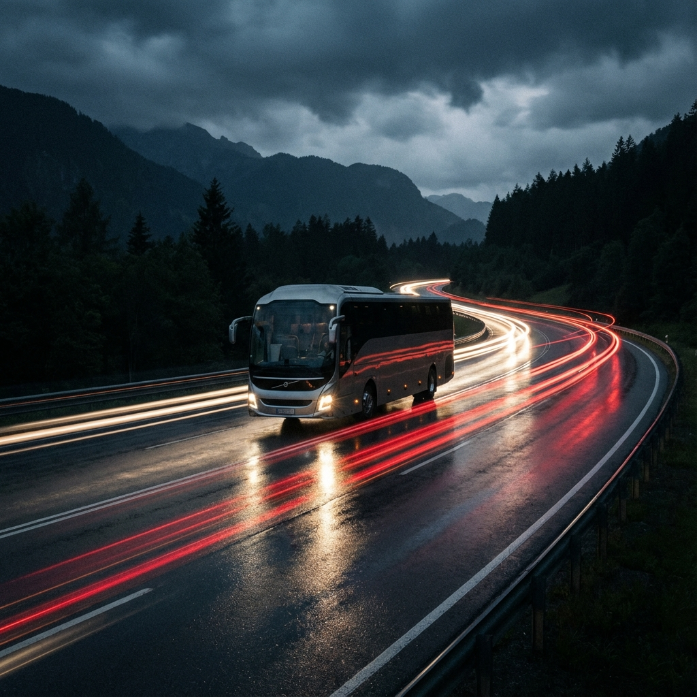
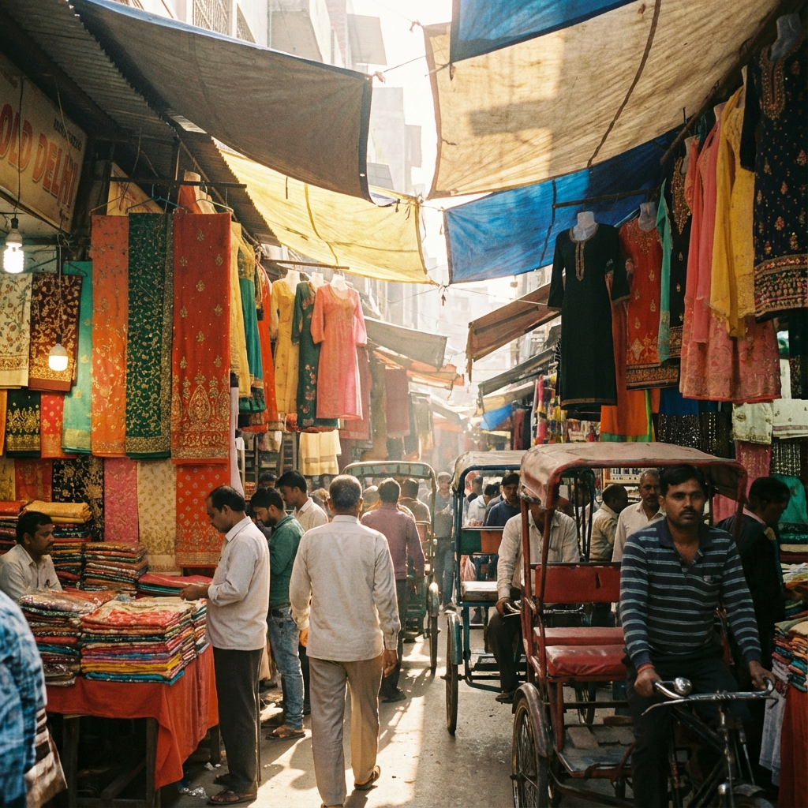
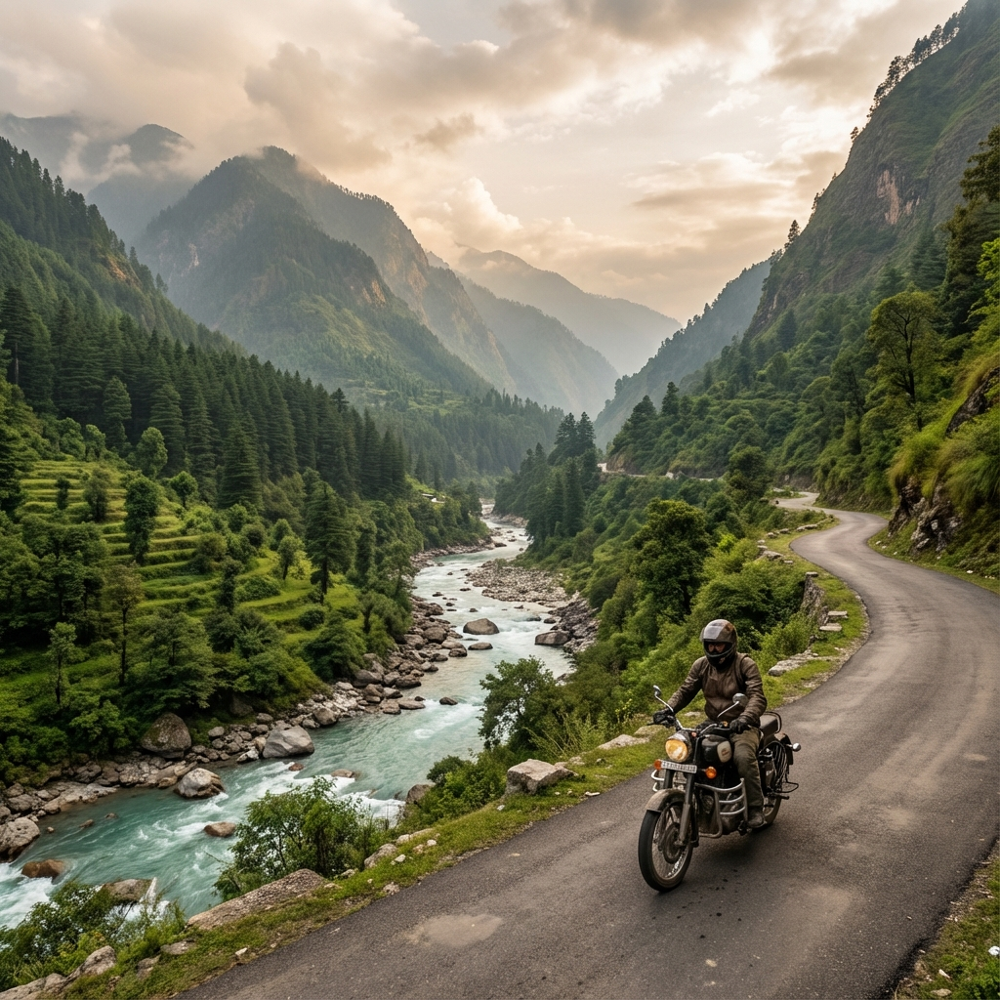
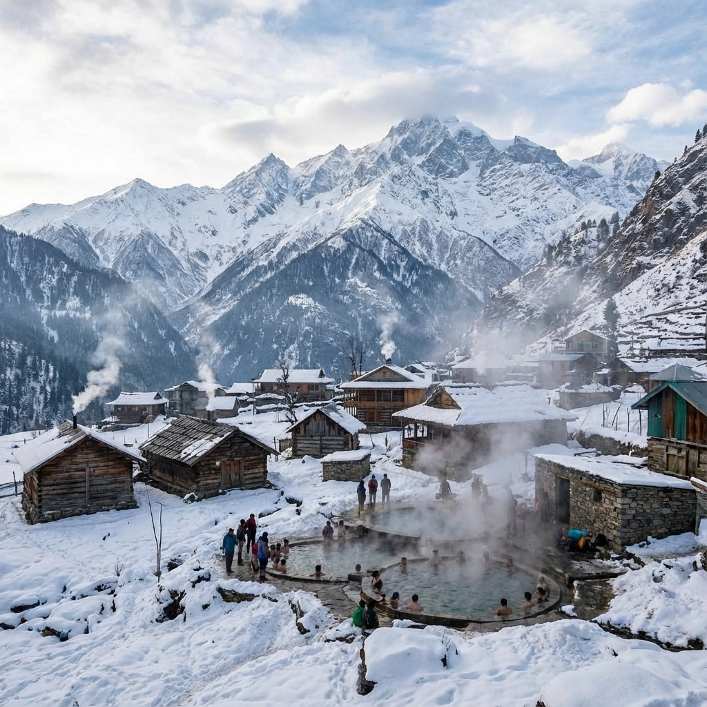
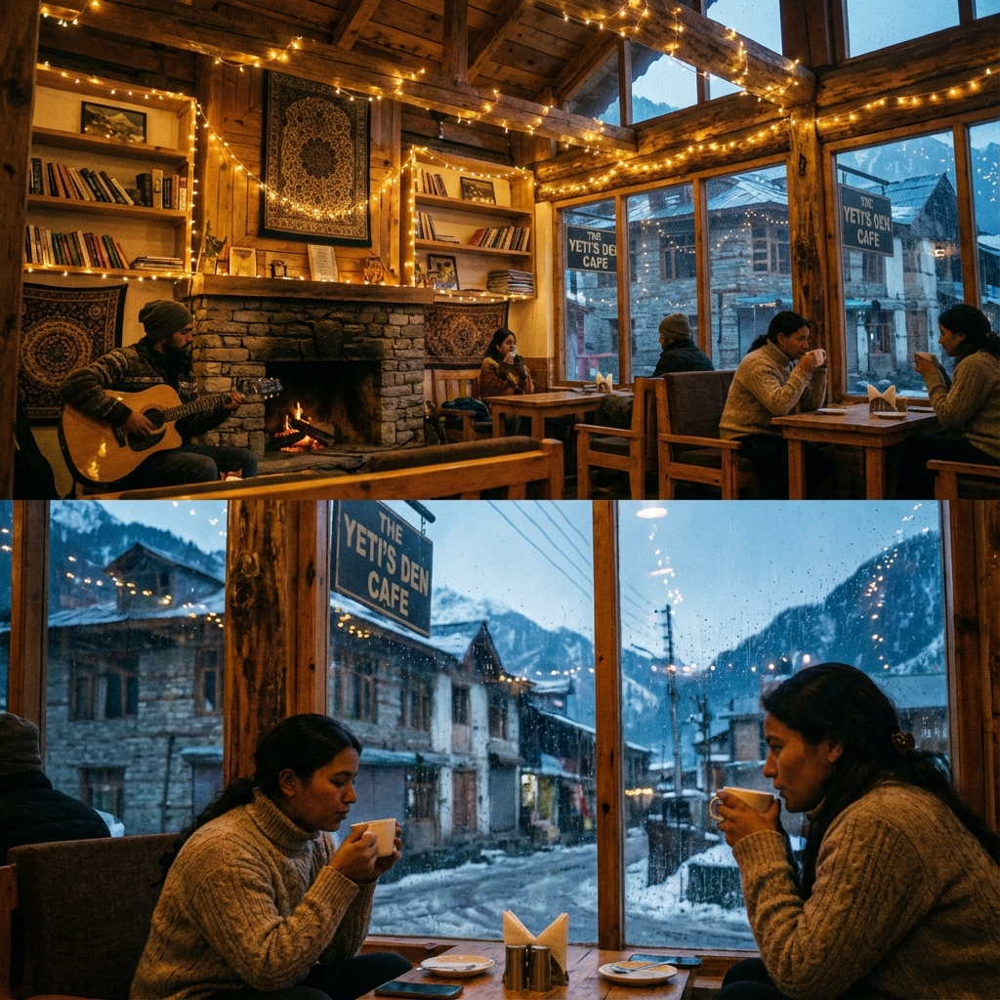
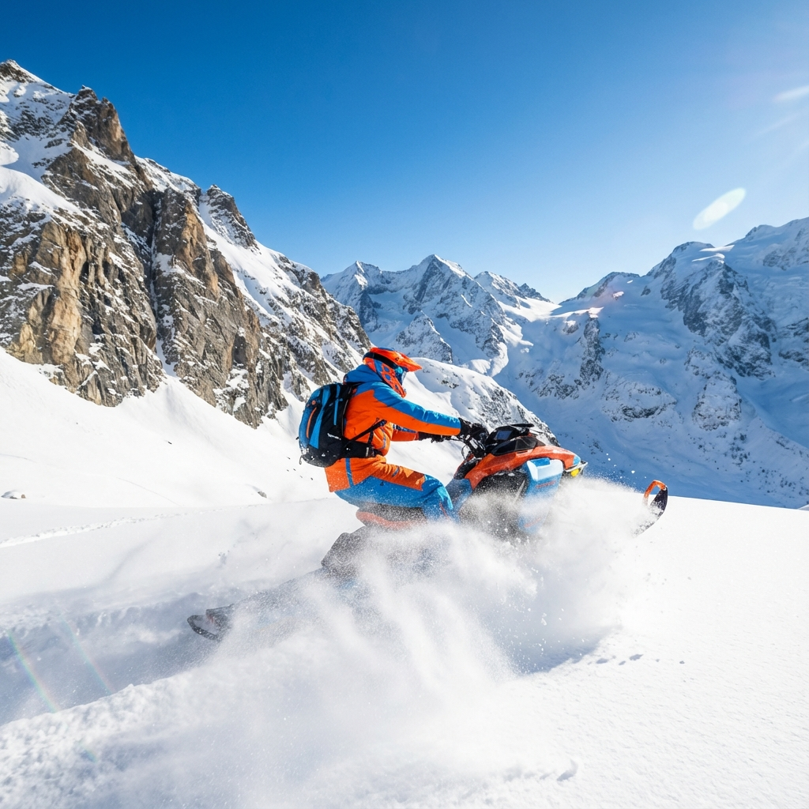

Sagar → Delhi
Overnight JourneyThe adventure begins. Departing from Sagar for an overnight journey to the capital.

Delhi Day
City VibesEarly arrival in Delhi. Breakfast, freshen up, and shopping before the mountains.

Bhuntar → Kasol
Moto RideMorning arrival in Bhuntar. Rent bikes and ride into Parvati Valley.

Kasol → Tosh → Manali
Trek & ChillA packed day of trekking, hot springs, and riding to Manali.

Manali Sightseeing
Culture & VibesExploring the best of Manali, from snowy valleys to ancient temples.

Atal Tunnel & Snow
Full Snow FunThe grand finale in Manali before heading to Shimla.
Shimla → Kalpa
Kinnaur EntryArrive in Shimla and immediately leave for Kalpa. Don't waste time in Shimla.
Kalpa → Nako → Kalpa
High AltitudeAttempt reaching Nako village. Return to Kalpa by evening.
Kalpa → Chitkul
Last VillageJourney to Chitkul via Sangla Valley. Open till 27-28 Dec most years.
Return to Shimla
Scenic DriveStart return journey. Take it slow along Sutlej.
Shimla → Home
The EndShimla/Narkanda to Delhi, then back to Sagar. Same day travel.